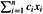
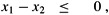
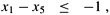
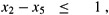
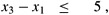
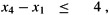
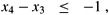
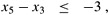
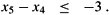
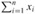

|
|
< Day Day Up > |
|
Chapter 29 studies the general linear-programming problem, in which we wish to optimize a linear function subject to a set of linear inequalities. In this section, we investigate a special case of linear programming that can be reduced to finding shortest paths from a single source. The single-source shortest-paths problem that results can then be solved using the Bellman-Ford algorithm, thereby also solving the linear-programming problem.
In the general linear-programming problem, we are given an m × n matrix A, an m-vector b, and an n-vector c. We wish to find a vector x of n elements that maximizes the objective function  subject to the m constraints given by Ax ≤ b.
Although the simplex algorithm, which is the focus of Chapter 29, does not always run in time polynomial in the size of its input, there are other linear-programming algorithms that do run in polynomial time. There are several reasons that it is important to understand the setup of linear-programming problems. First, knowing that a given problem can be cast as a polynomial-sized linear-programming problem immediately means that there is a polynomial-time algorithm for the problem. Second, there are many special cases of linear programming for which faster algorithms exist. For example, as shown in this section, the single-source shortest-paths problem is a special case of linear programming. Other problems that can be cast as linear programming include the single-pair shortest-path problem (Exercise 24.4-4) and the maximum-flow problem (Exercise 26.1-8).
Sometimes we don't really care about the objective function; we just wish to find any feasible solution, that is, any vector x that satisfies Ax ≤ b, or to determine that no feasible solution exists. We shall focus on one such feasibility problem.
In a system of difference constraints, each row of the linear-programming matrix A contains one 1 and one -1, and all other entries of A are 0. Thus, the constraints given by Ax ≤ b are a set of m difference constraints involving n unknowns, in which each constraint is a simple linear inequality of the form
xj - xi ≤ bk,
where 1 ≤ i, j ≤ n and 1 ≤ k ≤ m.
For example, consider the problem of finding the 5-vector x = (xi) that satisfies
This problem is equivalent to finding the unknowns xi , for i = 1, 2, ..., 5, such that the following 8 difference constraints are satisfied:
| (24.3) |  |
| (24.4) |  |
| (24.5) |  |
| (24.6) |  |
| (24.7) |  |
| (24.8) |  |
| (24.9) |  |
| (24.10) |  |
One solution to this problem is x = (-5, -3, 0, -1, -4), as can be verified directly by checking each inequality. In fact, there is more than one solution to this problem. Another is x' = (0, 2, 5, 4, 1). These two solutions are related: each component of x' is 5 larger than the corresponding component of x. This fact is not mere coincidence.
Systems of difference constraints occur in many different applications. For example, the unknowns xi may be times at which events are to occur. Each constraint can be viewed as stating that there must be at least a certain amount of time, or at most a certain amount of time, between two events. Perhaps the events are jobs to be performed during the assembly of a product. If we apply an adhesive that takes 2 hours to set at time x1 and we have to wait until it sets to install a part at time x2, then we have the constraint that x2 ≥ x1 + 2 or, equivalently, that x1 - x2 ≤ -2. Alternatively, we might require that the part be installed after the adhesive has been applied but no later than the time that the adhesive has set halfway. In this case, we get the pair of constraints x2 ≥ x1 and x2 ≤ x1 + 1 or, equivalently, x1 - x2 ≤ 0 and x2 - x1 ≤ 1.
It is beneficial to interpret systems of difference constraints from a graph-theoretic point of view. The idea is that in a system Ax ≤ b of difference constraints, the m × n linear-programming matrix A can be viewed as the transpose of an incidence matrix (see Exercise 22.1-7) for a graph with n vertices and m edges. Each vertex vi in the graph, for i = 1, 2,..., n, corresponds to one of the n unknown variables xi . Each directed edge in the graph corresponds to one of the m inequalities involving two unknowns.
More formally, given a system Ax ≤ b of difference constraints, the corresponding constraint graph is a weighted, directed graph G = (V, E), where
V = {v0, v1,..., vn}
and
E = {(vi, vj) : xj - xi ≤ bk is a constraint} ∪{(v0, v1), (v0, v2), (v0, v3),..., (v0, vn)} .
The additional vertex v0 is incorporated, as we shall see shortly, to guarantee that every other vertex is reachable from it. Thus, the vertex set V consists of a vertex vi for each unknown xi , plus an additional vertex v0. The edge set E contains an edge for each difference constraint, plus an edge (v0, vi) for each unknown xi . If xj - xi ≤ bk is a difference constraint, then the weight of edge (vi , vj) is w(vi, vj) = bk. The weight of each edge leaving v0 is 0. Figure 24.8 shows the constraint graph for the system (24.3)-(24.10) of difference constraints.
The following theorem shows that we can find a solution to a system of difference constraints by finding shortest-path weights in the corresponding constraint graph.
Given a system Ax ≤ b of difference constraints, let G = (V, E) be the corresponding constraint graph. If G contains no negative-weight cycles, then
is a feasible solution for the system. If G contains a negative-weight cycle, then there is no feasible solution for the system.
Proof We first show that if the constraint graph contains no negative-weight cycles, then equation (24.11) gives a feasible solution. Consider any edge (vi, vj) ∈ E. By the triangle inequality, δ(v0, vj) ≤ δ(v0, vi) + w(vi, vj) or, equivalently, δ(v0, vj) - δ(v0, vi) ≤ w(vi, vj). Thus, letting xi = δ(v0, vi) and xj = δ(v0, vj) satisfies the difference constraint xj - xi ≤ w(vi, vj) that corresponds to edge (vi, vj).
Now we show that if the constraint graph contains a negative-weight cycle, then the system of difference constraints has no feasible solution. Without loss of generality, let the negative-weight cycle be c = 〈v1, v2,..., vk〉, where v1 = vk. (The vertex v0 cannot be on cycle c, because it has no entering edges.) Cycle c corresponds to the following difference constraints:
|
x2 - x1 |
≤ |
w(v1, v2), |
|
x3 - x2 |
⋮ |
w(v2, v3), |
|
≤ | ||
|
xk - xk-1 |
≤ |
w(vk-1, vk), |
|
x1 - xk |
≤ |
w(vk, v1). |
Suppose that there is a solution for x satisfying each of these k inequalities. This solution must also satisfy the inequality that results when we sum the k inequalities together. If we sum the left-hand sides, each unknown xi is added in once and subtracted out once, so that the left-hand side of the sum is 0. The right-hand side sums to w(c), and thus we obtain 0 ≤ w(c). But since c is a negative-weight cycle, w(c) < 0, and we obtain the contradiction that 0 ≤ w(c) < 0.
Theorem 24.9 tells us that we can use the Bellman-Ford algorithm to solve a system of difference constraints. Because there are edges from the source vertex v0 to all other vertices in the constraint graph, any negative-weight cycle in the constraint graph is reachable from v0. If the Bellman-Ford algorithm returns TRUE, then the shortest-path weights give a feasible solution to the system. In Figure 24.8, for example, the shortest-path weights provide the feasible solution x = (-5, -3, 0, -1, -4), and by Lemma 24.8, x = (d - 5, d - 3, d, d - 1, d - 4) is also a feasible solution for any constant d. If the Bellman-Ford algorithm returns FALSE, there is no feasible solution to the system of difference constraints.
A system of difference constraints with m constraints on n unknowns produces a graph with n+1 vertices and n+m edges. Thus, using the Bellman-Ford algorithm, we can solve the system in O((n + 1)(n + m)) = O(n2 + nm) time. Exercise 24.4-5 asks you to modify the algorithm to run in O(nm) time, even if m is much less than n.
Find a feasible solution or determine that no feasible solution exists for the following system of difference constraints:
|
x1 - x2 |
≤ |
1, |
|
x1 - x4 |
≤ |
-4, |
|
x2 - x3 |
≤ |
2, |
|
x2 - x5 |
≤ |
7, |
|
x2 - x6 |
≤ |
5, |
|
x3 - x6 |
≤ |
10, |
|
x4 - x2 |
≤ |
2, |
|
x5 - x1 |
≤ |
-1 |
|
x5 - x4 |
≤ |
3, |
|
x6 - x3 |
≤ |
-8. |
Find a feasible solution or determine that no feasible solution exists for the following system of difference constraints:
|
x1 - x2 |
≤ |
4, |
|
x1 - x5 |
≤ |
5, |
|
x2 - x4 |
≤ |
-6, |
|
x3 - x2 |
≤ |
1, |
|
x4 - x1 |
≤ |
3, |
|
x4 - x3 |
≤ |
5, |
|
x4 - x5 |
≤ |
10, |
|
x5 - x3 |
≤ |
-4, |
|
x5 - x4 |
≤ |
-8. |
Can any shortest-path weight from the new vertex v0 in a constraint graph be positive? Explain.
Show how to modify the Bellman-Ford algorithm slightly so that when it is used to solve a system of difference constraints with m inequalities on n unknowns, the running time is O(nm).
Suppose that in addition to a system of difference constraints, we want to handle equality constraints of the form xi = xj + bk. Show how the Bellman-Ford algorithm can be adapted to solve this variety of constraint system.
Show how a system of difference constraints can be solved by a Bellman-Ford-like algorithm that runs on a constraint graph without the extra vertex v0.
Let Ax ≤ b be a system of m difference constraints in n unknowns. Show that the Bellman-Ford algorithm, when run on the corresponding constraint graph, maximizes  subject to Ax ≤ b and xi ≤ 0 for all xi.
Show that the Bellman-Ford algorithm, when run on the constraint graph for a system Ax ≤ b of difference constraints, minimizes the quantity (max {xi} - min {xi}) subject to Ax ≤ b. Explain how this fact might come in handy if the algorithm is used to schedule construction jobs.
Suppose that every row in the matrix A of a linear program Ax ≤ b corresponds to a difference constraint, a single-variable constraint of the form xi ≤ bk, or a single-variable constraint of the form -xi ≤ bk. Show how to adapt the Bellman-Ford algorithm to solve this variety of constraint system.
|
|
< Day Day Up > |
|